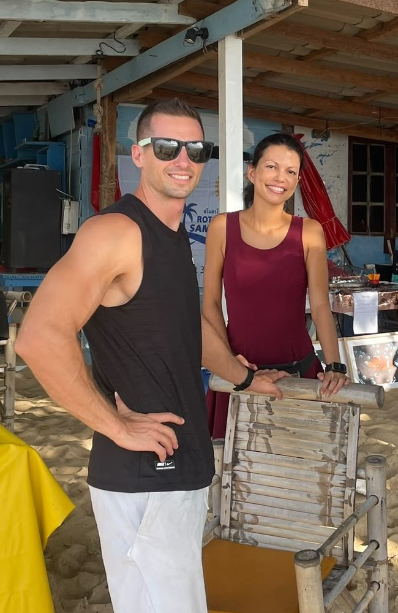
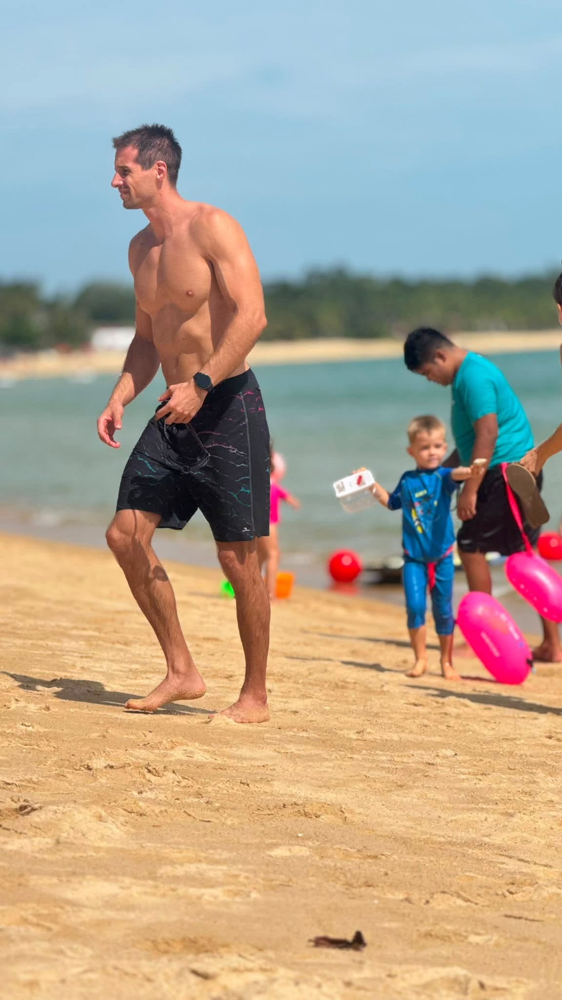
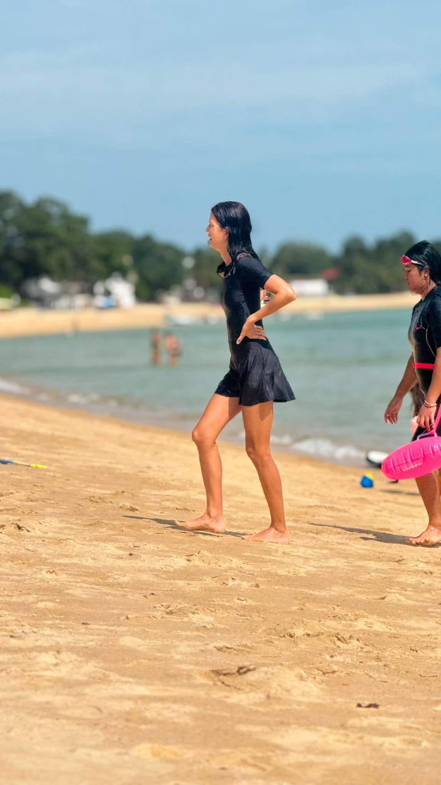
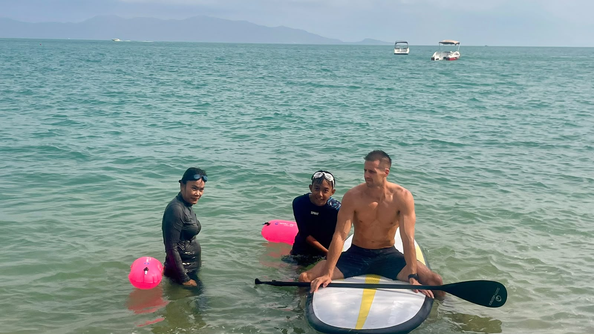
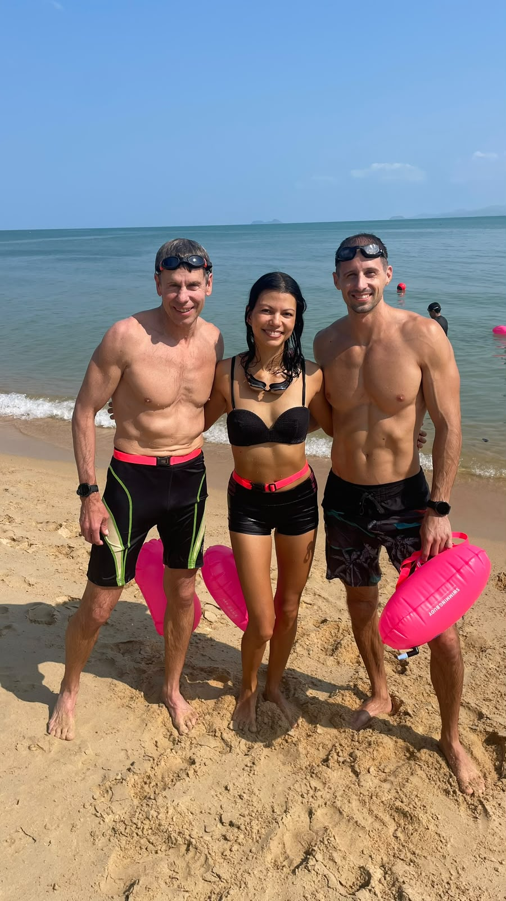
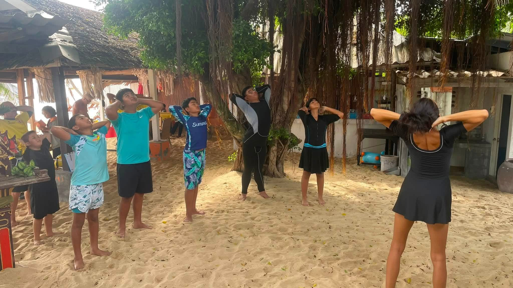

Juliette & Tom
Juliette and Tom in action with the Surf Club community.

Juliette & Tom
Juliette was one of the inaugural members of the Koh Samui Surf Lifesaving Club and later introduced Tom to the club. Together, they have become one of our dynamic duos, rarely missing a Sunday and playing a huge role in teaching and supporting the kids.
In recent times, Juliette has also introduced yoga into the Sunday sessions, helping the children warm up and prepare for their ocean activities. Both Juliette and Tom are regularly out on the boards and in the water, swimming alongside the kids, helping them build confidence and develop their ocean skills.
Their energy, enthusiasm and willingness to get involved are greatly appreciated by everyone at the club. Tom, being American, and Juliette, being French, bring an international flavour to the community and perfectly represent the diverse group of people who have come together to help build the Koh Samui Surf Lifesaving Club.
We are incredibly grateful to have them both as part of the team.




